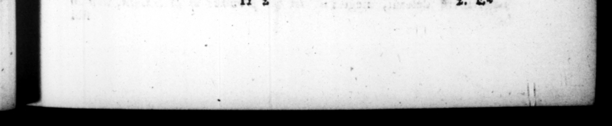

=_ 8 / v , ER RS e TT CS nn nt I % D. OCTAV, AUGUST. wm hac de cauſſa ſimulecro in vertice additur ſtella. nam, in qua occiſus eſt, obſtrui placuit : Iduſque Martias parricidium nominart : ac ne unquam eo die ſenatus ageretur. 4 89. Percuſſorum autem fere neque triennio quiſquam amplius ſupervixit, neque ſua morte defunctus eſt, Damnati omnes, —— _ caſu — naufragio, pars prælio, — ſemet eodem illo pugione quo Ceſarem violaverant, interemerunt. | 4 the crown of bi fla— Fs — houſe in 210 he — ain was ordered to be kept cloſe ſhut, and a decree made, that the of March ſhould be called the parricide, and the ſe * 4 4. ar. bad hand in big 2 : after him, or dyed a narural death. They were al condenmed by the ſenate, and ſome were t by one misfortutie, ſome by another + ſome periſh'd at (ea, others fell in battle; and ſome ſlew themlebves with the Jan ponyard, they had ſlain Ceſar C. SUETONII TRANQUILLI D. Ocravivs Cax8an AvcGvsrvs, CHAPTER I. I, ENT EM Octaviam 8 Velirris precipuam olim fuifſe, multa Oe declarant, Nam & Vicus celeberrima parte oppidi jam pridem Octavins vocabatur: & oſtendebatur ara Octavio conſecrata : qui bel lo dux finitimo, cum forte Marti rem divinam faceret, nuntiata repente hoſtis incurſione, ſemicruda exta rapta foco proſecuit: atque ita prælium ingreſſus, victor rediit. IJecretum etiam publicum exſtabat, quo cavebatur ut in poſterum quoque ſimili modo exta Marti redderentur, reliquizque ad Octavios referrentur, n HAT the family of the OctaTS wii was of the firſt rank in Felitre, is ways appsrent. Fir beſides @ fircet named Oftavinus in the moſt frequented art of the town, there was to be feen not long ſince an altar conſecrated to one Offavius, who being choſen eneral in a war with ſime neighs, and alarmed with advice of the ſudden inroad of the enemy, as he was ſacrificing to the God Mars, he ſnatched the entrails of the victim immediately fon off the fire, and offered them half raw upon the altar, and then marching out to battle returned wiftorious. Which gave occafron to a law, whereby it was ena d, that the entrails ſbaulad for ever after be offered to Mars in the ſame manner, and the reft of the ſacrifice be carried to the Oftavii, 2. Ed
